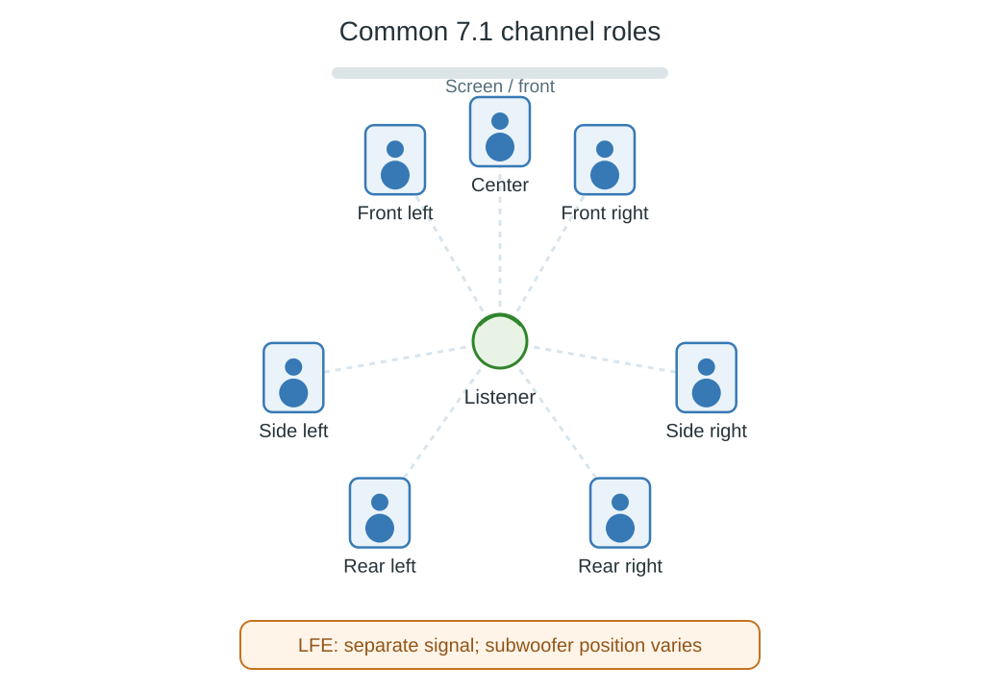

7.1 Surround Sound
A common 7.1 layout uses seven main channels with separate side and rear surrounds, plus LFE.
A sound moving along the listener's side and then behind can use separate side and rear surround channels in a common 7.1 home-theater mix. The front remains left, center, and right. With LFE, the presentation contains eight signals.

Top-view schematic of three front channels, two side surrounds, two rear surrounds, and a separately labeled LFE signal.
| Group | Roles | Count |
|---|---|---|
| Front | Left, center, right | 3 |
| Side surround | Left and right | 2 |
| Rear surround | Left and right | 2 |
| Effects bass | LFE | 1 |
What the extra pair changes
A 5.1 mix has one surround signal per side. Those can already reproduce sound behind or around the listener, but they provide fewer independently controlled positions than the separate side/rear pairs of this 7.1 arrangement.
In a 7.1 mix, the producer can move an effect from left side toward left rear by changing its contribution between those signals. A room-filling ambience can use several surround channels simultaneously. The benefit is additional spatial control, not simply a larger count of active speakers.
These surround positions remain around the listener's horizontal plane. A system described as 7.1.4 adds four height positions to its speaker arrangement; the 7.1 count alone does not specify those heights.
Reproduce it on a different layout
A 5.1 destination must combine or otherwise appropriately render the side/rear information into its available surrounds. Dropping the rear pair can remove an event deliberately mixed there. The conversion also manages summed levels.
The reverse operation is different. A receiver with seven main speakers can upmix a 5.1 source and derive rear outputs from the available material. Those derived outputs are not two additional independently stored channels in the source.
When an Emby report shows eight channels, use the layout as well as the count to identify this particular presentation. Other eight-signal arrangements exist. Then compare the decoder's output roles and the receiving system's configuration: preserving eight values is useful only when they remain associated with the intended front, side, rear, and LFE paths.